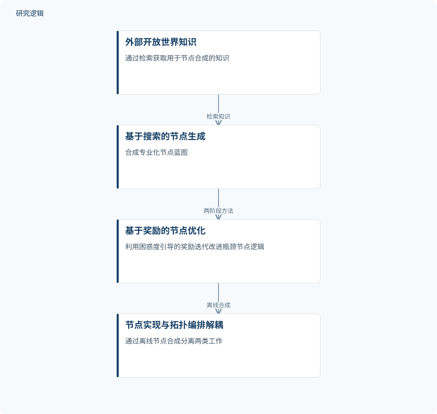

摘要解读
Unified-MAS：通用领域专用节点生成，赋能自动多智能体系统
Unified-MAS: Universally Generating Domain-Specific Nodes for Empowering Automatic Multi-Agent Systems
解读更新 2026-11-27 21:51 · 依据公开摘要整理，未核验全文细节
自动多智能体系统如何应对医疗、法律等知识密集型任务？Unified-MAS 将专业节点的生成与系统拓扑编排分开，为理解专业知识如何进入自动多智能体系统提供了一个视角。
文章目录
通用节点与即时生成的两难
自动多智能体系统生成被视为解决复杂推理任务的一种有前景的范式，但进入知识密集型领域时，节点的专业能力成为关键问题。依赖静态通用节点库的框架，例如使用思维链节点的框架，可能缺少所需的领域专长。
另一种做法是即时生成节点，但编排器既受自身知识范围限制，又要同时生成领域逻辑和优化高层拓扑。摘要认为，这种架构耦合会降低系统整体效能。
离线合成专业节点，分离实现与编排
Unified-MAS 的核心思路是通过离线节点合成，将细粒度的节点实现与拓扑编排解耦。它首先采用基于搜索的节点生成，检索外部开放世界知识，合成专业化的节点蓝图，以突破大语言模型内部知识的限制。
随后，基于奖励的节点优化利用困惑度引导的奖励，迭代改进瓶颈节点的内部逻辑。摘要将这两个环节作为方法的两个阶段，但没有给出奖励的具体计算方式或节点蓝图的详细形式。
依据摘要整理的节点合成过程


示意图仅概括摘要明确描述的两个阶段及其目标，不代表论文原图或未报告的实验配置。
下载 SVG图示关系说明
实线表示相邻阶段的信息流，虚线表示跨阶段联系或反馈。
外部开放世界知识 → 基于搜索的节点生成：检索知识；基于搜索的节点生成 → 基于奖励的节点优化：两阶段方法；基于奖励的节点优化 → 节点实现与拓扑编排解耦：离线合成
摘要报告的性能、成本与适用性
摘要报告，在四个专业领域的实验中，将 Unified-MAS 集成到四个自动多智能体系统基线后，取得了更好的性能—成本权衡：性能提升最高达 14.2%，同时成本显著降低。摘要未说明这一最高增益对应的具体指标、任务或比较条件。
进一步分析显示，该方法在不同设计者大语言模型下具有鲁棒性，并在数学推理等常规任务上表现出有效性。摘要没有列出这些分析的具体结果，因此不宜据此判断各模型或各任务上的提升幅度。
样本、比较与验证范围仍需细读
仅凭摘要，无法判断各领域的样本规模、数据构成和任务难度，也无法确认基线的具体配置、成本统计口径，以及性能提升的完整比较对象。
摘要同样没有详细说明不同设计者模型的测试范围、鲁棒性的衡量方式或数学推理任务的验证细节。这些是当前资料的边界，不能据此断言论文没有开展相应分析。
阅读启发：关注知识与编排的分工
阅读启发：对于关注大语言模型多智能体系统的读者，可以进一步查阅论文如何界定专业节点与编排器的职责，以及外部知识检索和瓶颈节点优化各自如何影响最终表现。
建议结合论文中的具体任务、比较设置和成本口径解读摘要所述收益，再判断这一离线合成思路与自己关注的知识密集型场景有多大关联。
以上为本站阅读启发与建议，不是论文已验证的结论。